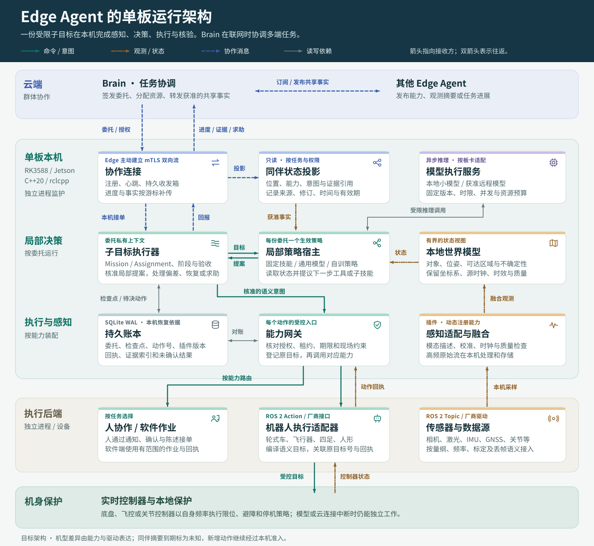

谁决定下一步，谁能让机器动起来？
要操作已经实现的单机器人版本，可从启动指南、v0.1 PRD和Gazebo 验收记录进入。本页覆盖后续可替换模型、云边与群体协作的目标设计。
假设 Brain 下发“核对 A 区三块设备铭牌并提交可读证据”。它只需说明范围、成功条件和授权。先读哪一块、逆光时怎样换角度、哪一步可以在断网后继续，都需要端侧根据刚刚观测到的现场作决定。
Brain 管团队目标
持有 mission、用户授权、分工、团队成员与公共资源许可。收到进度、求助或能力变化后，可以修改或撤回子目标。
Edge 管本机任务
每份子目标有自己的上下文。策略提出下一步，执行内核审核，本机持续跟踪动作、证据与资源；无网时仍能推进获准的独立步骤。
控制器管物理闭环
导航栈、飞控、步态控制器或安全硬件落实运动、限幅与平台失效保护。停车、悬停、降落等策略逐机定义，在模型或 Linux 进程失效时仍须有本机保护路径。

第一版技术选择 任务内核、能力网关和 ROS 2 桥使用 C++20 / rclcpp。板卡推理 SDK 与动态扩展走版本化进程接口，避免把供应商库的崩溃、C++ ABI 和发布周期带进内核。首版用一种系统语言便于联调。语言选择依据是现有 ROS 和板卡接口，性能优势仍需同负载实测。
选型依据：何时选 Rust，何时选 TypeScript？
先确定要交付的模块。第一台真机要尽快接上 ROS Action、控制器和板卡 SDK，优先复用 C++ / rclcpp。若从零开发要长期维护的任务内核，团队能维护 Rust 与 C++ 两套 ARM64 构建，可选 Rust 管任务状态、取消、资源和断线恢复，C++ 只保留设备桥。Rust 的所有权能在编译时检查一类内存错误，动作去重、资源代次与掉电恢复仍需协议和故障试验。ROS 2 Jazzy 将 rclcpp 列为核心团队维护的客户端，也列出了社区维护的 Rust 和 Node.js 客户端。ROS 2 客户端维护范围 · Rust 所有权
若迭代最多的是模型 API、提示词与工具编排，或要直接装载现有 DeepSeek Harness 插件，可用 TypeScript / Node.js 实现策略宿主。耗时的同步计算交给独立工作进程；任务内核有自己的取消与健康通道。单纯借鉴插件架构时，C++ 或 Rust 也能实现服务发现、作用域和生命周期。Node.js 事件循环 · DeepSeek Harness 插件机制
定版前只对有分歧的模块做对照。固定板卡、能力网关、推理后端、输入和负载，复用同一套契约测试。检查模型卡住时处理取消请求的 p99、控制器确认到达安全状态的实测时间、峰值内存、进程重启后重复动作数，以及接入新能力到通过板端 CI 的工程成本。离线的 C++ 契约示例只验证行为约束，无法给出语言性能排名。
一台 Edge 内部的模块怎样合作？
建议一个部署包、五个逻辑职责。最小镜像可以将低风险的视图构建、目录和链路客户端放在同一进程。控制器、易崩溃的推理 SDK 与可热更的驱动保持独立故障边界。下表给出生产部署的参考拆分。
| 模块 / 归属 | 接收 → 产出 | 能写什么，失败如何隔离 |
|---|---|---|
云边客户端linkd | 身份、游标、待发消息 ↔ Brain 双向流；入站消息交内核，出站按确认重送。 | 维护连接与退避。持久收件、发件和任务状态由内核提交。断线按任务离线授权执行。 |
任务执行内核edge-execd | 任务、策略提案、控制器回执和触发事件 → 状态转换、资源许可、待执行动作与证据索引。 | 本地任务状态单写者。内含调度器、插件目录、世界状态投影、验收器。进程恢复先对账，再放行相关资源。 |
策略服务policyd | 定版观测、能力菜单、剩余预算 → 有类型的下一步提案。 | 可挂规则、外部通用 API 或本地模型。可终止、限时、替换。进程没有设备写权限。 |
感知工作进程perceptiond | 图像、激光、IMU 等 → 带来源的观测、置信度、时间及证据引用。 | 按插件隔离 GPU/NPU 依赖。积压时丢弃允许丢弃的旧帧，报告数据缺口。关键传感器失效立即影响能力就绪。 |
执行网关 / 适配器gatewayd | 经许可的动作、查询、取消 → ROS Action / 平台 SDK / 人工请求；返回物理状态与结果。 | 每个执行资源只接受当前许可代次，保留可查询的动作映射。底层控制器有独立的驱动写入和失联保护。 |
EventBus 在哪里用，怎样实现
| 通道 | 第一版实现 | 语义与背压 |
|---|---|---|
| 本地状态事件 | 内核内用有界队列、类型化消息和单写者事件循环。插件控制面跨进程用版本化 Protobuf / Unix socket 请求或订阅，网关操作有明确目标与回执。 | 任务、许可、取消、结果先落 SQLite 再通知订阅者。唤醒可合并，终态必须可重读。为取消与健康事件保留处理容量。 |
| 传感与实时控制 | ROS 2 topic / SDK 缓冲传样本，服务做短查询，Action 承载可反馈、可取消的长动作。高频流在板内就近消费。 | 针对每种传感器配置深度、可靠性与时效；事件日志只存结构化变化和引用。硬实时回路使用平台控制器自己的周期。 |
| 跨 Edge 协作 | Edge 向 Brain 主动建立 mTLS 双向 gRPC 流，收件去重、发件持久化、重连重放。Brain 过滤并分发队友状态。 | 任务消息至少一次传输。共享状态允许合并，任务终态、取消和屏障决议要持久确认。连接层 ACK 与完成回执有不同含义。 |
事件信封最少有 event_id, kind, schema_version, edge_id, boot_id, source_seq, mission_id?, assignment_id?, causation_id, trace_id, payload_ref。观测另带采样时钟信息。内核提交时分配本机持久游标 local_offset；进程启动号与本机游标、云端团队游标分别管理。回放只调用状态归并函数，禁止触发真实执行出口。
哪些思想来自三个参考项目
- DeepSeek Harness 通过作用域上下文发现服务，声明依赖，可撤销服务注册和监听；类型化事件与直接服务调用各有用途。这里借其插件生命周期，将机械动作的占用和撤销结果另建契约。原版 Cordis 插件若需原样运行，可另写隔离的策略宿主；本文的 C++ 接口没有直接加载 TS 插件的兼容承诺。Harness 源文档
- DeepSeek SuperAgent 原型 的 Engine 统一写入任务域对象，事务内登记外部工作，适配器在提交后实施。Edge 沿用这一恢复边界，加上控制器对账、物理资源仲裁、离线授权和验收证据。SuperAgent 的 Engine 设计
- Tangying Robot Agent OS 已把能力、输入、作用效果、资源和验证写入契约，Edge 调用绑定任务与能力版本。这是定义语义技能、验收器和资源代次的直接起点。能力契约 · Edge 调用绑定
子目标怎样变成机器人可执行的动作？
子目标是一份带验收条件的委托。一次任务可以运行几小时，模型的单次调用只需解决“根据现在的事实，下一步提议做什么”。运行时保存任务历史并重新组装输入。
Assignment 示例值
mission_id / assignment_id / rev M42 / inspect-A / 3
goal / scope 核对 A 区设备铭牌 A1、A2、A3
acceptance 每个 ID 有可读图像、识别结果、位置和时间
allowed_capabilities / envelope navigate、inspect_label；A 区边界、速度上限
budget / deadline 允许的尝试次数、能量储备、最迟完成时间
offline_policy / team_requirements 可继续独占的区内步骤；共享通道须团队放行
issuer / grant_epoch 签发 Brain 身份、本次授权代次- 接单。 验证身份、委托版本、能力与预算。可行则持久接收并回复
Accepted；传感器缺失或验收条件无法解释，回复结构化原因，可另回一份部分可行的方案。 - 形成局部计划。 以目标、前置条件、依赖、资源和验收谓词表示步骤。如“定位到 A2 → 检查图像质量 → 读取铭牌 → 存证”。模板技能可以直接展开；模型生成的新步骤经类型、环依赖、规模、权限和成本检查后才入计划。保存计划 revision，只替换尚可修改的步骤。
- 构造决策上下文。 用
mission_id + assignment_id + attempt选取本任务，加入剩余步骤、近期有效事实、本机资源占用、获准队友摘要、前次失败和当前就绪的能力版本。大图、完整日志按需引用。记录observation_id与目录版本，供事后还原模型实际看见的输入。 - 提案与放行。 策略只能返回
Invoke / Observe / Wait / RequestBrain / ProposeDone / Blocked。执行内核重查任务版本、数据年龄、域权限、实体参数、插件代次、硬件健康、离线条件和资源冲突。提案来自旧快照时返回原因并重新观察。 - 动作与验收。 获准后分配稳定
operation_id，记录待分发动作；网关将其映射为控制器操作标识。控制器报告完成后，验收器检查世界事实和证据。“导航成功”只能关闭靠近步骤，“铭牌清晰且编号匹配”才能关闭读取步骤。全部谓词成立才提交子目标成功。
并发的粒度是资源。 同一机器人可以边走边做不争用底盘的 OCR，也可以交错处理两份委托。调度器原子申领整组资源，如底盘独占、经驱动声明可共享的相机流、数量受限的推理槽位；优先级、截止期与等待时长决定次序。抢占先申请取消，收到平台定义的安全终态后再换发资源代次。超时本身无法释放仍可能运动的底盘。
什么时候再问一次模型？ 新委托、验收失败、关键依赖变化、预算即将耗尽、用户变更目标都可以唤醒局部策略。按委托和原因去重，同一委托同一时刻只采纳一个有效 revision 的提案。普通导航反馈只更新状态；低电量可直接触发本机保护并向 Brain 上报受影响的委托。Brain 收到 NeedsHelp(reason, evidence, alternatives) 后选择补充信息、修改委托、换机或结束。先前版本的模型结果迟到时无法覆盖新决定。
落盘到哪里，掉电怎样接上
每台 Edge 使用本地持久卷，内核在 SQLite WAL 同一事务中更新 assignments / steps / operations / resource_claims / events / inbox / outbox。动作记录包括输入哈希、插件实例、授权代次、控制器目标 UUID、状态与证据摘要。较大的图像和点云存证据卷，先完成可校验的文件写入，再提交内容哈希与引用。关键日志设保留配额；不能可靠落盘时停止接收新的有副作用动作。
恢复时，读最近检查点并重放后继事件，查询所有未决 operation_id。查到执行中则接续订阅，查到终态则补验收，查不到则标记 UNKNOWN、保留占用并核对实测状态。需要用硬件可证明的安全重置或人工确认结束不确定状态。ROS Action 的结果缓存有生命周期，控制器重启后可能缺失；重复 UUID 或数据库事务本身无法保证物理动作只做一次。ROS 2 Action 的结果缓存
接入一种新机型，要改哪一层？
最高层抽象只描述插件的身份、依赖、版本、生命周期。插件按所能履行的职责实现小接口。一台车和一只机器狗可以都提供“到达观测位”，各自声明坡度、可达空间、定位和停止条件。Brain 拿到可用能力的交集及约束，Edge 为具体实例选适配器。
PluginHost.mount(manifest, factory) 检查协议版本、依赖、权限，建立实例作用域
Plugin.start(scoped_services) 注册端口，健康/校准通过后才加入能力目录
Plugin.drain(reason, deadline) 停接新操作，交接或核实在途操作
Plugin.stop() 撤销订阅、定时器、端口和设备句柄
SensorPort.describe / observe 暴露设备与观测契约
PolicyPort.propose(observation, menu) 限时产出结构化提案
SkillPort.expand(goal, constraints) 把语义目标展开为可追踪的步骤
ActionPort.start / query / cancel 用同一 operation_id 跟踪可中断的动作
VerifierPort.check(predicate, evidence) 返回 satisfied / failed / unknown 及依据这是语义接口草案。进程内可以用窄 C++ 接口；进程外按版本化消息交互。作用域只授予清单声明的服务、设备和订阅。想调用通用模型的插件要显式申请推理端口，计入任务预算；获取推理能力并不授予设备控制权。签名/版本白名单、独立进程、ROS 写权限和设备节点白名单由部署层落实。
| 能力与使用者 | 输入 → 输出 / 完成判据 | 实例如何变化 |
|---|---|---|
navigate_to策略可选的语义动作 | 带坐标系的目标区域、运动模式约束、容差、截止期 → 当前位置、终态和定位证据。进入区域且满足速度/停稳约束才通过。 | 轮式走导航栈，足式接步态与导航，飞行平台要有独立的三维走廊、航态和返航约束。二维目标若缺飞行约束可拒绝。 |
inspect_label可展开、可取消的技能 | 对象 ID、证据规范、尝试上限 → 拍摄、质量评估、识别与证据引用。检查可读度及编号匹配；低质量触发重新观测。 | RGB 相机加 OCR、云台或人形机替换执行器。至少暴露子步骤、失败原因和资源冲突。 |
observe_region有期限的观测请求 | 区域、所需模态、最新采样时间界限 → 事实列表、未覆盖区、置信度及来源。 | 相机、热像、雷达等只提供各自能证实的事实。遮挡时返回未知或需要其他模态。 |
request_confirmation真人参与的异步能力 | 问题、候选、证据、期限 → 同意、拒绝、超时或带身份的答复。 | 若“人”指协作者，用授权终端和同意机制；人形机器人则照自身关节、平衡、抓取等能力登记。 |
每项能力的 manifest 包含 capability_id, version, input/output_schema, dependencies, preconditions, effects, claims, cancel_policy, verifier, timeout, evidence_policy。目录另记录本次挂载的 instance_id, generation, ready, health, constraints。模型看到紧凑的语义菜单；执行器可以保留更细的控制原语。是否拆成技能取决于是否有独立目标、过程反馈、取消和可验证终态。
热拔插有两种路径。 主动下线先撤销就绪并排空，再解除注册。意外拔出直接把实例和依赖能力标为失效、撤回广告，触发在途操作核对。相同型号插回产生新代次；新相机须完成时钟、标定、坐标系和健康检查，并由内核显式重新绑定。旧证据保留原来源。电气层能否带电插拔取决于硬件接口。
能力目录支持热变更；根执行内核、机体保护逻辑与未提供安全交接方式的控制器按维护窗口升级。新插件可以停止接单、任务可以等待或降级，安全保护的连续性必须有独立保障。
怎样为未知型号的传感器留好接口？
分三层保存信息。驱动提供原始样本，感知插件把它转换为可检验的事实，世界视图将本任务用得上的事实投影到某个版本。新传感器只需实现对应的描述和适配；用它完成某项任务，还需要相应的标定、解释算法和验收器。
| 对象 | 必要字段 | 解决的具体问题 |
|---|---|---|
| 传感器描述 | 模态、schema / 编码、单位、维度、驱动版本、传输方式、标定版本、坐标系、频率与 QoS、健康和隐私范围。 | 相机/深度图、LiDAR/雷达、IMU/里程计/GNSS/UWB、力触觉/关节、电源、麦克风或未来专用传感器，可以有不同数据结构。 |
| 采样信封 | 设备实例与代次、序号、采集时间及 clock domain、时钟误差界、本机接收的单调时刻、frame_id、标定 revision、方差或质量、数据引用。 | 区分“刚收到”与“刚采到”。同一位置在不同地图、同一数据在不同启动周期具有不同含义。 |
| 可查询事实 | 命题、值或 unknown、可信范围、来源、TTL、证据引用、地图版本、变换链、可见范围。 | 内核能询问“此刻是否还有足够新鲜的定位”和“这是谁直接看见的”。模型可以按需请求小图或片段。 |
本机超时与看门狗用单调钟；多设备融合用采集时间和已估计的时钟偏差及误差界。不同板的单调钟不能相减；无法确定时间/坐标变换一致性时，将位置降为未知。仿真时另记录 clock_epoch，遇到 /clock 回退令跨周期缓存失效。允许的误差和观测年龄由技能声明，在具体车速、飞行状态和感知频率下验证。ROS 时钟设计 · ROS 2 QoS
原始流默认留在板上。原始证据按任务保留策略、磁盘水位和访问权限管理。共享事实如“门口被占用”可以只同步对象、时间、置信度与可授权检索的证据引用。引用失效要显示证据缺失，不能默认为验收成功。
一台机器人怎样感知另一台，以及何时可以一起行动？
先分开三个问题：B 自己报告在哪，A 的相机看到谁，Brain 允许谁使用共享通道。三者可能同时成立，也可能冲突。每条信息都应能指出来源、有效期和相应权限。
| 协议步骤 | 从哪里到哪里 | 契约与行为 |
|---|---|---|
| 注册与重连 | Edge → Brain | Hello(edge_id, boot_id, protocol_versions, capability_revision, last_acked_cursor)，Brain 校验证书和角色，返回当前成员代次、授权任务与快照/增量起点。能力变化发 delta；注册和删除由权威的团队视图确认。失联置离线/未知。 |
| 分配与撤回 | Brain → Edge → Brain | Assign / Amend / Revoke 带 mission、委托 ID、版本和授权代次。Edge 持久接收后分别报告 accepted、progress、blocked、verified 或 canceled。重复信封返回原处理状态；旧版本无法重启任务。 |
| 队友状态与事实 | A → Brain → 获准的 B | PeerDelta(team_epoch, peer_id, boot_id, source_seq, capture_time±error, ttl, frame, map_rev, fact, evidence_ref)。Brain 以任务/团队权限筛选。B 将其存入只读队友投影，按成员版本、来源实例、顺序、TTL 和坐标系检查。游标有缺口则取快照。 |
| 协调放行 | Brain ↔ 参与者 | Prepare(barrier_id, epoch, members, resource, window) → Ready / Reject → Release / Abort。Brain 持久化唯一决议和共享许可，参与方复核令牌、剩余窗口、本地健康和实际环境后才执行。释放时带资源 fencing token，拒绝迟到的旧代次。 |
从“看见队友”到“获得许可”有两次判断。 队友投影保留“B 自报的位置”和“A 本机看到的候选 B”两条观察，再按证据做身份关联。当身份可信度、新鲜度或地图不满足要求时，模型可建议询问 Brain 或重新观测；本地避障持续依靠本机传感和控制器。
例如 B 负责确认已经退出共享通道，A 才是下一位通行者。Ready 必须结合 B 的实际退出证据；Release 指明通行权的唯一持有人 A。Brain 分别维护成员名单版本、一次协调的编号和资源许可代次。收到高版本成员快照，即使本机被移出也要立刻使旧许可失效；重新加入需重新准备。授权有效窗换算到本机时须计入时钟误差，重启后无法证明剩余期限则要求重新授权。
断网时，单机可在既定授权、时间与能量边界内完成独立步骤，证据暂存发件箱。需要新共享许可、成员状态或联合放行的步骤等待；已进入共享区的机器人按预定清空/安全保持协议处置。Brain 在旧占用实际清除前保持冲突资源封锁。多方 Ready 与网络 Release 不能保证物理动作同时发生。确实要求同步起动的场景须另定义共同时间基准、最大偏差和丢包/失联时的机体级联锁，并做真机验证。
为什么现在就定义 PeerPort？ 第一台机器人可读到空队友集，单机策略照常工作。第二台接入后，同一个 observe_peers(scope, freshness) 返回经授权且标明来源的观测。未来的群体策略能直接消费这组变长输入；可在版本化协议后更换同步传输和学习方法。
自训模型将来究竟替换哪一块？
将可学习的决策集中在 PolicyPort。状态归并、资源仲裁、动作许可与结果验收始终可以单独测试。模型给出的理由可以归档为摘要；确定性复盘依靠它实际收到的输入、结构化输出、版本和随后的观测。
PolicyObservation v1
task(goal, acceptance, remaining_steps, budget) + local_facts(age, uncertainty)
+ capability_menu(revision, legal_parameters) + peer_facts[0..n](source, age)
+ open_operations + last_errors + permitted_evidence_refs
DecisionProposal v1
basis_observation_id, task_revision, kind, capability?, arguments?,
expected_evidence?, scope?, wait_until?, reason_code第一版可用规则或行为树完成已知技能，只在观测不符或选择有歧义时唤醒大模型。通用 LLM API、本地视觉语言模型和自训小模型各有 provider；推理超时、无效参数或预算用尽均返回有类型的失败。本机优先保证控制、取消、状态持久化和必要感知的资源，模型不足时回退到已批准的本地策略，或者上报 Blocked。
训练样本至少包含任务与观测版本、有效队友集合、可选动作、候选动作、获准/拒绝及原因、实际动作、后续证据与验证结果、平台和模型版本。按场地、机体与任务划分训练/验证，避免同一轨迹泄漏。将来可以汇集多机轨迹集中训练，部署时各机仅消费当时自己可获得的观测。若新模型要直接输出本体控制轨迹，应另建经平台控制器约束与验证的专用技能端口。
| 实验阶段 | 对照与指标 | 能回答的问题 |
|---|---|---|
| 离线回放 | 固定同一批观测与能力菜单，比较规则、通用 API、自训模型的合法提案率、过期队友引用率、延迟和内存。 | 模型是否遵守契约。替代动作的真实后果需要闭环实验。 |
| 闭环仿真 | 匹配场地、任务、随机种子、设备能力，加入拔插、丢包和成员变化。比较验收成功率、失败类别、耗能、额外求助和恢复耗时。 | 策略是否改善长程任务。分机型和难度报告样本数与区间；预测更快与任务更成功分开报告。 |
| 群体消融 | 同一批多机任务比较无队友输入、仅 Brain 分工、Brain 分工加队友事实、再加入自训策略。测完成率、重复覆盖、资源冲突、通信字节/任务和尾部时延。 | 收益来自共享事实、协调机制还是学习策略。加入队友失联、错误自报和队伍规模变化。 |
| 板端影子与灰度 | 在同一观测上并行记录候选输出，影子无执行权。资源紧张时先离线做对照。再限定任务与场地做真机试点，按模型哈希回滚。 | 新模型是否适配具体板型的热、内存与本体约束，并在真实闭环改善结果。 |
三块铭牌，一次断网，一次换相机
下面是一段设计演练。展开每一步，可以看到机器人知道什么、谁做决定、留下什么证据。起始条件是 Edge A 有轮式底盘、RGB 相机、定位和本地 OCR。B 是未来加入的第二台机器人。
① Brain 分配 A 区，A 建立任务上下文
Brain 发 Assign(M42, inspect-A, rev=3)，允许区内独自作业，第三块铭牌所在的通道须团队预约。Edge 验证目标区域、能量和能力，新建步骤与检查点，返回 Accepted。此时 A2 和 A3 都没有验收证据。
② A1 一次读对，A2 逆光，Edge 自主改方法
策略选 navigate_to(A1)，内核持久登记操作再发给底盘；停稳和定位通过后，inspect_label(A1) 产生带位置和采样时间的读数。到 A2 时，控制器返回成功但图像质量不足。验收器记录 evidence.glare。下一次策略调用只收到失败、附近的合法观测位和剩余尝试预算，提议换位再拍。
③ 网络中断，单机任务继续，协作步骤等待
A 在授权区域内换位，进度和证据进入 outbox。通信超时产生一次状态转换；冷却期间不为每个失败重连重复唤醒模型。A3 的通道需要在线许可，步骤进入 WaitingForTeam。同一设备上的独立任务仍可使用未被占用的资源。
④ 相机被拔掉又换新，旧绑定失效
采集中断后，目录撤销实例 cam-7 的就绪，依赖它的读取技能失效。新相机 cam-8 完成标定、时钟、坐标系和健康检查，内核显式改绑，重新采样；A1 的旧照片保留原来源。若上个硬件动作状态未知，内核先查询网关，无法查清就保持占用并上报原因。
⑤ 网络恢复，A 通过 Brain 得知 B 的状态
A 从已确认游标续传。Brain 下发新成员视图和 B 的占用事实；如果 B 的报告已过期，A 的队友投影将通道状态记为未知。Brain 收到必要成员的有效就绪回执、核实公共资源后发放当前版本的许可。A 再检查本机感知、资源和窗口，才进入通道。如果检测到新障碍，A 拒绝执行并回报原因。
⑥ 任务成功，或具体到哪一层失败
验收器逐一核对 A1/A2/A3 的编号、可读图像、位置和时间并生成清单。只完成两项时可报告部分结果。Brain 收到 Verified 后按用户任务验收。按 trace_id → assignment_id → step_id → operation_id 可查该步当时的观测、模型/规则提案、许可判定、控制器结果与验证记录。
同一句“没完成”，三种不同的修复
| 观察到的末端原因 | 可检查的证据 | 合适的下一步 |
|---|---|---|
| 模型或策略输出了旧相机 ID | 输入目录版本、新实例激活时间、提案中的绑定、内核拒绝码。 | 重新构造上下文后做有预算的重提案；反复出错转确定性策略或求助。 |
| 模型提案合法，控制器失联 | 已持久化的动作标识、资源许可代次、最后反馈、控制器重启与查询记录。 | 进入对账，保持资源占用；核实物理状态后才考虑重发或交接。 |
| 控制器成功，任务验收失败 | 照片、采集与校准信息、验收器版本、失败谓词及剩余预算。 | 换观测位、模态或请求协助。保持完成项，避免重做整个任务。 |
第一版做到什么，才值得接第二台机器人？
| 里程碑 | 交付切片 | 门槛与可保留的证据 |
|---|---|---|
| P0 单 Edge 软件闭环 | 持久内核、策略端口、模拟控制器、单个 inspect 子目标、取消与回放，优先用规则策略。 | 注入提交前后崩溃、重复委托和两个任务争用底盘；检查没有越权启动、没有双占，未决动作可解释。给出完整 trace 和持久化重启测试。 |
| P1 一种机体、两种板 | 实现一个真实动作和一个感知适配器；以同一组任务测试 RK3588 与选定 Jetson。容器设备映射、推理 provider 和镜像基线由各板 profile 描述。 | 测采集年龄、取消至机体安全状态、控制截止期、内存水位和热降频，做传感器拔出、模型进程崩溃、磁盘满与断电恢复。 |
| P2 两台 Edge、一台 Brain | 身份注册、能力增删、任务增量、队友投影与共享通道预约。增加与第一台运动约束不同的机体。 | 重连乱序、过期成员、重复放行、B 掉线或地图版本不兼容时，都要有明确处置。确认单机任务可持续、共享资源无违规新准入。 |
| P3 替换模型与群体学习 | 接一个自训策略并按前述消融评测；保留规则和通用 API 基线、观测/训练数据版本和模型回滚路径。 | 在未见场地和未见成员组合报告团队收益、通信开销和各机体回归。先影子对照，再逐项开通真机授权。 |
如何部署一版。 开发阶段在 Docker 中构建和测试 C++，仿真使用假网关。板端以同一套消息契约分别发布匹配 RK BSP 与 JetPack/L4T 的 ARM64 镜像；宿主保留匹配驱动与机体独立看门狗。给控制器、必要感知、存储留资源，按压力依次收缩可选感知、并行推理和模型规模。板型、内存、散热、功耗档和传感器负载是部署输入，实际支持清单须逐项验收。
配套交付 板卡手册给出设备映射、上线前检查与 9 项试验；C++20 示例用于验证热插拔、资源占用与协作许可的核心契约。它用内存和模拟时钟运行，板端推理、实体动作与持久化恢复属于下一阶段验收。
板卡部署与真机验收（Markdown）C++20 契约示例在 Windows 的项目根目录，可用已有 ROS Docker 镜像离线复现示例。
docker run --rm --pull=never --network none --read-only --tmpfs /tmp:rw,exec `
--mount "type=bind,source=${PWD}/examples,target=/src,readonly" `
--entrypoint /bin/sh ros:jazzy-ros-base -ec 'g++ -std=c++20 -Wall -Wextra -Werror -pedantic /src/edge_contract_smoke.cpp -o /tmp/check && /tmp/check'